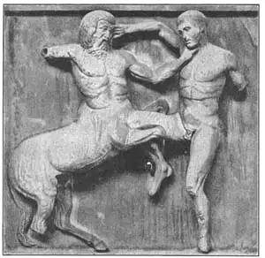

37
THE GREATEST GREEK SCULPTOR
古希腊最伟大的雕刻家

ORDINARY men we call “Mr.”—Mr. Smith; Mr. Jones, Great men we call by their full names without the “Mr.”— George Washington for instance. But the greatest men of all we call just by their last names. People have made lists of the hundred greatest men of all time—the greatest ruler, the greatest writer, the greatest painter, the greatest sculptor, but probably you have never heard of the greatest sculptor. He was a Greek. His name was Phidias—no first name, no middle name—just Phidias.
Polyclitus and Myron made statues of men and women. Phidias made statues of gods and goddesses and god-like men and women. In Athens there is a huge, high rock called the Acropolis, which means the Upper City, and on this rock the old Greeks built a beautiful temple called the Parthenon. It was built just to hold a magnificent statue of Athene, the Goddess of Wisdom, who the Athenians believed watched over them and their city as a mother watches over her children, and gave them many useful things.
Phidias was chosen to make this statue of the goddess. Cold marble was not good enough material, so Phidias made the statue of gold and ivory, and he made it seven times as high as a human being. His Athene stood erect in a sleeveless robe that reached to the ground. On her bosom was a breastplate with a border of serpents because serpents were supposed to be the wisest of creatures. In the center of the breastplate was the head of Medusa. (You remember I told you that Athene helped Perseus to cut that head off.) Around the head of Medusa, between the serpents and the head, was shown a battle between the Amazons and the Greeks. Athene wore a helmet. On top of this helmet was a sphinx and on each side of the sphinx were winged horses. Athene’s left arm rested on a shield and carried a lance around which coiled another serpent. In her right hand Athene held a statue of Victory, who faced her and offered her a wreath of gold. The statue of Victory was about six feet high, so you see how big the statue of Athene herself must have been.
This statue of Athene has entirely disappeared, probably stolen piece by piece for its gold and ivory. We know what it looked like only by a small, probably very poor, copy that was made of it and judging by the copy we have, we cannot quite agree that the statue was as beautiful as the old Greeks thought it.
This statue, as I told you, was on the inside of the Parthenon. All around the four outside walls of the temple, high up near the roof, was a band or strip called a frieze, of sculptured figures in low relief. This frieze was almost a tenth of a mile long and showed in marble a parade or grand procession that took place in Athens once every four years. The object of the procession was to bear a gift of a golden veil made by the virgins of Athens for their goddess, and it was carried with great pomp and glory and ceremony to the temple. All Athenians —men, women, and children—took part in the procession. There were horsemen with their horses. There were animals to be sacrificed. There were girls and boys bearing gifts; there were musicians and singers.
The sculptured picture of the procession starts at one end of the Parthenon and proceeds along both sides of the temple to the other end, where the entrance is. It is the most perfect relief work that we know anything about and though there are hundreds of figures of men, women, and animals, Phidias planned it all and with his pupils made it all. There is a tenth of a mile of it, and yet there is not a rough or unfinished part in the whole.
When the relief was in its place on the Parthenon wall, it could just barely be seen, it was so high up and closed in by the portico of columns that surrounded the whole. That it might be seen better, the background and the figures were painted. But nothing except perfect work, whether it could be seen or not, was good enough for the temple of this goddess of the Athenians and even the parts that never could be seen were finished perfectly.

No.37-1 FIGHTING CENTAUR METOPE（《争战的半人半马》）
FROM THE PARTHENON（来自帕台农神庙的排档间饰）
Above and between the columns which were around these walls were separate groups of figures in high relief illustrating battles, most of them between gods and fairy-tale animals called centaurs. A centaur had the body of a horse and the head and trunk of a man. There were ninety-two groups of these spaces, or metopes , and there is not one of these metope sculptures that is not now broken! An arm or a leg is off, a nose is broken, an ear or an eye is missing. So you have to use your imagination, if you have any, to understand what the figure looked like when it was perfect. If you have no imagination, you probably will exclaim, “What! You call that beautiful?”
At each end of the Parthenon there is a large triangular space made by the sloping roof and in these two triangular spaces were groups of superb, heroic size figures of gods and goddesses. Heroic size means hero size—that is, bigger than real life. They are in the full round. That is, they stand free from the back. But, unfortunately again, little is left. The group in one triangular end represented the birth of Athene.
Athene was not born as a tiny baby, but full grown and fully armed, and she came from the brain of the king of the gods—that is why she was so wise. Zeus, the chief of the gods, was in the center of this group. Vulcan, the blacksmith god, had just struck him on the head with his hammer, and according to the story, Athene in full armor sprang out of his head. On each side of this central group, the other gods and goddesses are looking on. Some are standing, some are sitting, some are lying down. The groups were planned to fit the triangular spaces. Of the statues remaining, one is Theseus, taken from the left corner, and the so-called Three Fates, from the right corner. The Three Fates are a good test of your imagination, for they have no heads, hands, or feet. Can you imagine what they once looked like?
Lord Elgin, an English nobleman, saw these sculptures many years ago and thought them so beautiful that he wanted his country to have them. In the position in which the frieze was placed on the Parthenon, they could not be seen properly and they were gradually being destroyed, for there seemed to be no one interested enough to take any care of them. So he bought most of them for what amounted to one third of a million dollars and took them to England, where they were put in the British Museum. They are known now as the Elgin marbles.
But the greatest of all the sculpture that Phidias made was not in Athens. It was in a temple at Olympia. For this temple he made a statue of Zeus. It too was made of gold and ivory, and it too has disappeared. A single lock of the statue’s “hair” is said to have been worth a thousand dollars. This statue of Zeus was so famous that every Greek hoped to see it before he died and it was called one of the Seven Wonders of the World. Phidias, when he had completed it, prayed Zeus to show in some way if he liked the statue of himself. Whereupon a thunderbolt shot down from the blue sky overhead and fell at the sculptor’s feet!
But the great Phidias, after all he had done, was put in prison. You’d never guess why! Just because he had cut a picture of himself on the shield of the Athene in the Parthenon. This, to the Athenians. was a terrible crime. A mortal to put a picture of himself on the shield of their goddess! And so in prison Phidias died. What an end for the greatest sculptor that ever lived!
【中文阅读】
我们通常称普通人“某某先生”，比如称斯密斯先生或琼斯先生。而对伟人我们就用全名，不称“先生”，例如乔治·华盛顿。但对于最伟大的人，我们就直呼其姓了。人们已经列出了有史以来一百位最伟大的人，其中有统治者、作家、画家和雕刻家。谈到这位最伟大的雕刻家，我们好像从没听说过。他是希腊人，名叫菲迪亚斯，其实他没有名，只有姓。
波利克里托斯和米隆刻了许多男女雕像，而菲迪亚斯雕刻的是诸神以及类神人。希腊有座高大的山岩，叫雅典卫城，意思是“高地之城”。希腊人在这山岩上建造了一座漂亮的殿宇，叫帕台农神庙，用来供奉智慧女神雅典娜的巨像。雅典人相信她像母亲守护自己孩子那样守护他们和这座城市，并赐给他们许多有用之物。
菲迪亚斯被推选去制作这座女神像。菲迪亚斯认为坚硬的大理石不是最佳材质，所以就选用了黄金和象牙做材料。这座雕像是普通人身高的七倍。雅典娜女神穿着一件拖地的无袖长袍，笔直地站着，胸前还套了一件蛇形边饰胸甲，古希腊人认为蛇是最聪明的动物。胸甲中间是美杜莎头像（还记得我介绍过雅典娜帮助帕尔修斯砍下美杜莎头颅的故事吧）。在杜美莎头像周围，也就是蛇像和头像中间雕刻的是亚马逊女战士和古希腊人的战争场景。雅典娜头上还戴着一个头盔，顶上是斯芬克斯狮身人面 像，狮身两侧是长翅的马。雅典娜左臂搁在一个盾牌上，左手拿着一支矛，矛上缠着另一条蛇。右手捧着一尊胜利女神雕像，面朝雅典娜，献上金花环。胜利女神雕像差不多有六英尺高，所以你可以想象雅典娜雕像该有多么高大。
雅典娜雕像早已消失殆尽，可能是有人为了黄金象牙，一块块地把它盗走了。如今，我们只能通过一件小小的，或许低劣的摹制品，来判断雕像的原貌。只是单凭这件摹制品，我们很难能像古希腊人那样来看待那座美雕。
我说过，这座雕像是放在帕台农神庙里的。在神庙靠近天花板的四面外墙周围有一条饰带，叫“中楣”，上刻许多浅浮雕。中楣总长差不多0.1英里，由大理石制成，上刻雅典四年一次的大游行场景。主办游行的目的是将雅典处女们为女神制作的礼物——一幅黄金面纱送到神庙。游行场面壮观而辉煌。雅典的男女老少尽都参加。有人驾快马而来，有人牵祭牲而去。孩子们手捧礼物；乐师奏乐，歌手吟唱。
雕刻的游行队伍是从帕台农神庙一端开始，从神庙两侧穿行，到达另一端，就是神庙入口处。这是我们所能知道的最完美的一件浮雕作品。菲迪亚斯先做设计，再带着学生们共同完成。这幅浮雕长0.1英里，整体效果很好，没有一点粗糙或欠缺之处，尽管刻了几百号人物和动物。
帕台农神庙墙上的浮雕刻得是好，可几乎看不见，因为实在太高了，而且又被周围的柱廊遮挡。浮雕背景和人物都涂了颜料，可能看得清楚点。但是，不管能否看清楚，它都堪称完美之作，也只有完美之作才配得上雅典娜女神庙，哪怕是放在人们看不到的地方。
墙壁四周的柱子上方和柱子中间有许多独立的深浮雕，上面刻画了战争的场景，大多数是神和一种叫做“半人半马”的神话动物之间的战争。半人半马由马身和人头人身组成。这样的浮雕也叫“排档间饰”，共有九十二组，但如今没有哪一件不是有损的，要么缺胳膊少腿，要么掉了鼻子，或少只眼或少只耳。所以，面对这样一座浮雕，必须充分发挥想象力，才能想象出画面人物完整时的样子。如果缺乏想象力，我们可能就会惊呼：“什么！这也叫美观？”
因为帕台农神庙的屋顶有坡度，所以神庙两端便形成一个大三角形区域。而在两个三角形区域里有一大批超大型的神像，比真人大得多，都是圆雕，也就是说它们完全脱离了背景。但又是不幸，因为它们所剩无几。其中一个三角形区域的一组雕像刻画了雅典娜的诞生。
雅典娜出生时不是一个幼小的婴儿，而是一个长大的成人。她出自众神之王宙斯的大脑，这也是她为什么那么聪明的原因。宙斯在这组雕像的中心。据说，冶炼之神伏尔甘用锤子锤击宙斯的脑袋后，雅典娜便全副武装地从宙斯的头颅里蹦了出来。在中间这组雕像的两侧，诸神在旁观，有的站着，有的坐着，还有躺着的。这些雕像就是为满足三角形区域而设计的。留存的雕像中有一尊名叫《特修斯》，在左边角落。还有一座位于右边角落，即所谓的《命运三女神》。它能很好地检验人们的想象力，因为雕像都是残缺的，不是缺胳膊就是少腿。能想象出他们曾经的样子吗？
多年前，英国贵族埃尔金爵士看到了这些雕像，觉得它们很美，就希望它们为英 国所有。因为这些雕像位于帕台农神庙的中楣，不太看得清楚，似乎没人感兴趣，也就没人来照看，慢慢地也就毁坏了。于是，埃尔金爵士花了三十多万美金买下了这些雕像，并将它们运到了英国，存放在大英博物馆里。如今，这些雕像被称作“埃尔金大理石雕像”。
但是，菲迪亚斯最了不起的雕像并不在雅典，而是存放在奥林匹亚的一座殿宇里。菲迪亚斯用黄金和象牙为这座殿宇雕刻了一座宙斯雕像，但如今也已经散失。据说，这座雕像的一束头发就值一千美金。这座宙斯像实在太著名了，所以古希腊人都想在有生之年能一睹其风采。它被称为“世界七大奇迹”之一。菲迪亚斯完成这座雕像后，便向宙斯祈祷，希望宙斯能以某种方式告知他是否喜欢这座雕像。祷告间，忽然一声霹雳从天而降，直落在雕刻家的脚上。
可是，伟大的菲迪亚斯完成了这些杰作后却下了监。我们真猜不透是什么原因！就是因为他在帕台农神庙雅典娜的盾牌上刻了一幅自画像吗？当然这种做法对希腊人来说是不可饶恕的罪行。他们认为，把一个凡人的画像刻在女神的盾牌上是要判死罪的！菲迪亚斯就这样死在狱中。有史以来最伟大的雕刻家竟落得如此下场，真是令人惋惜啊！